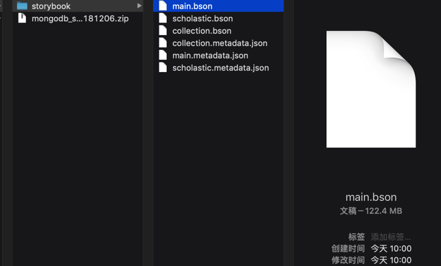

mongodump和mongorestore
概述：
- mongodump
- 导出整个数据库(
db)mongodump -d databaseName -o outputFolder- 输出目录如果是：当前目录
.mongodump -d databaseName -o .
- 输出目录如果是：当前目录
- 导出数据库(
db)中某个集合(Collection)=子表mongodump -d databaseName -c CollectionName -o outputFolder- 输出目录如果是：当前目录
.mongodump -d databaseName -c CollectionName -o .
- 输出目录如果是：当前目录
- 其他说明
- 导出的单个collection文件名一般是
collectionName.bson和collectionName.metadata.json
- 导出的单个collection文件名一般是
- 导出整个数据库(
- mongorestore
- 恢复（导入）某个目录下的某个数据库(
db)中的所有的集合(collection)mongorestore -d databaseName ./localSubFoler- 说明：当前目录
localSubFoler中有一个或多个*.bson(以及对应的*.metadata.json) - 举例
mongorestore -d storybook ./storybook
- 说明：当前目录
- 恢复（导入）某个数据库(
db)中的单个集合(collection)mongorestore -d databaseName -c CollectionName subFolder/someCollection.bson- 注：mongorestore从文件导入数据的话，不支持JSON文件，只支持BSON文件
- 且是用mongodump导出的BSON文件
- 举例
mongorestore -d storybook -c lexile ./storybook/lexile.bson
- 注：mongorestore从文件导入数据的话，不支持JSON文件，只支持BSON文件
- 恢复（导入）某个目录下的某个数据库(
- 通用参数
- 额外指定
host和port- 举例
mongorestore -h localhost --port 32018 -d storybook ./storybook
- 举例
- 额外指定（对应数据库和表的）
用户名和密码- 举例
mongorestore -h localhost --port 32018 -u storybook -p yourPassword -d storybook ./storybook
- 举例
- 额外指定
详解：
mongodump备份
某次导出的命令：
master mongodump -d shortLink -c gameShortLink -o .
2021-09-10T08:58:12.258+0800 writing shortLink.gameShortLink to shortLink/gameShortLink.bson
2021-09-10T08:58:12.306+0800 done dumping shortLink.gameShortLink (900 documents)
master mongodump -d shortLink -c parsedPureShortLink -o .
2021-09-10T08:58:21.449+0800 writing shortLink.parsedPureShortLink to shortLink/parsedPureShortLink.bson
2021-09-10T08:58:21.451+0800 done dumping shortLink.parsedPureShortLink (14 documents)
导出后的文件：
master ll
total 0
drwxr-xr-x 6 limao 1748468295 192B 9 10 08:58 shortLink
master ll shortLink
total 16224
-rw-r--r-- 1 limao 1748468295 7.8M 9 10 08:58 gameShortLink.bson
-rw-r--r-- 1 limao 1748468295 871B 9 10 08:58 gameShortLink.metadata.json
-rw-r--r-- 1 limao 1748468295 131K 9 10 08:58 parsedPureShortLink.bson
-rw-r--r-- 1 limao 1748468295 223B 9 10 08:58 parsedPureShortLink.metadata.json
- 导出 本地MongoDB 的某表到当前文件夹
mongodump -d storybook -o .
- 导出 本地MongoDB 某表中某集合到当前文件夹，且指定host和port
mongodump -h 127.0.0.1 --port 27017 -d Scholastic -c Storybook -o .
- 导出 远程阿里云的MongoDB 某表中某集合到当前文件夹，且指定host和port，以及指定用户名和密码
mongodump --host dds-xxx.mongodb.rds.aliyuncs.com --port xxx --authenticationDatabase admin -u root -p xxx -d exercise -o .
参数解释：
-d=--database：数据库 Scholastic-c=--collection：集合=表，Storybook--type：默认为json- 所以此处可以不传此参数，用默认值
-o==--out：.表示 当前文件夹
shell输出：
Scholastic
Storybook.bson # 数据文件, 60M
Storybook.metadata.json # 元数据, 130B
举例：
[root@xxx-general-01 exercise]# mongodump --host dds-xxx.mongodb.rds.aliyuncs.com --port xxx --authenticationDatabase admin -u root -p xxx -d exercise -o .
2019-03-07T11:30:24.036+0800 writing exercise.storybook to
2019-03-07T11:30:24.037+0800 writing exercise.unit to
2019-03-07T11:30:24.037+0800 writing exercise.dialog to
2019-03-07T11:30:24.037+0800 writing exercise.audio.files to
2019-03-07T11:30:24.038+0800 done dumping exercise.storybook (2 documents)
2019-03-07T11:30:24.038+0800 writing exercise.audio.chunks to
2019-03-07T11:30:24.038+0800 done dumping exercise.unit (1 document)
2019-03-07T11:30:24.039+0800 done dumping exercise.audio.chunks (1 document)
2019-03-07T11:30:24.047+0800 done dumping exercise.audio.files (1 document)
2019-03-07T11:30:24.048+0800 done dumping exercise.dialog (1 document)
[root@xxx-general-01 exercise]# ll
total 4
drwxr-xr-x 2 root root 4096 Mar 7 11:30 exercise
[root@xxx-general-01 exercise]# ll exercise/
total 60
-rw-r--r-- 1 root root 20737 Mar 7 11:30 audio.chunks.bson
-rw-r--r-- 1 root root 195 Mar 7 11:30 audio.chunks.metadata.json
-rw-r--r-- 1 root root 249 Mar 7 11:30 audio.files.bson
-rw-r--r-- 1 root root 197 Mar 7 11:30 audio.files.metadata.json
-rw-r--r-- 1 root root 554 Mar 7 11:30 dialog.bson
-rw-r--r-- 1 root root 87 Mar 7 11:30 dialog.metadata.json
-rw-r--r-- 1 root root 834 Mar 7 11:30 storybook.bson
-rw-r--r-- 1 root root 90 Mar 7 11:30 storybook.metadata.json
-rw-r--r-- 1 root root 309 Mar 7 11:30 unit.bson
-rw-r--r-- 1 root root 85 Mar 7 11:30 unit.metadata.json
另附上，之前某次导出的数据的文件如下：

mongodump语法help帮助
➜ output git:(master) ✗ mongodump --help
Usage:
mongodump <options>
Export the content of a running server into .bson files.
Specify a database with -d and a collection with -c to only dump that database or collection.
See http://docs.mongodb.org/manual/reference/program/mongodump/ for more information.
general options:
--help print usage
--version print the tool version and exit
verbosity options:
-v, --verbose=<level> more detailed log output (include multiple times for more verbosity, e.g. -vvvvv, or specify a
numeric value, e.g. --verbose=N)
--quiet hide all log output
connection options:
-h, --host=<hostname> mongodb host to connect to (setname/host1,host2 for replica sets)
--port=<port> server port (can also use --host hostname:port)
ssl options:
--ssl connect to a mongod or mongos that has ssl enabled
--sslCAFile=<filename> the .pem file containing the root certificate chain from the certificate authority
--sslPEMKeyFile=<filename> the .pem file containing the certificate and key
--sslPEMKeyPassword=<password> the password to decrypt the sslPEMKeyFile, if necessary
--sslCRLFile=<filename> the .pem file containing the certificate revocation list
--sslAllowInvalidCertificates bypass the validation for server certificates
--sslAllowInvalidHostnames bypass the validation for server name
--sslFIPSMode use FIPS mode of the installed openssl library
authentication options:
-u, --username=<username> username for authentication
-p, --password=<password> password for authentication
--authenticationDatabase=<database-name> database that holds the user's credentials
--authenticationMechanism=<mechanism> authentication mechanism to use
namespace options:
-d, --db=<database-name> database to use
-c, --collection=<collection-name> collection to use
uri options:
--uri=mongodb-uri mongodb uri connection string
query options:
-q, --query= query filter, as a JSON string, e.g., '{x:{$gt:1}}'
--queryFile= path to a file containing a query filter (JSON)
--readPreference=<string>|<json> specify either a preference name or a preference json object
--forceTableScan force a table scan
output options:
-o, --out=<directory-path> output directory, or '-' for stdout (defaults to 'dump')
--gzip compress archive our collection output with Gzip
--repair try to recover documents from damaged data files (not supported by all storage engines)
--oplog use oplog for taking a point-in-time snapshot
--archive=<file-path> dump as an archive to the specified path. If flag is specified without a value, archive is written
to stdout
--dumpDbUsersAndRoles dump user and role definitions for the specified database
--excludeCollection=<collection-name> collection to exclude from the dump (may be specified multiple times to exclude additional
collections)
--excludeCollectionsWithPrefix=<collection-prefix> exclude all collections from the dump that have the given prefix (may be specified multiple times
to exclude additional prefixes)
-j, --numParallelCollections= number of collections to dump in parallel (4 by default) (default: 4)
--viewsAsCollections dump views as normal collections with their produced data, omitting standard collections
mongorestore恢复
举例：
- 从某个目录，导入整个database：
➜ from_server ll
total 48
drwxr-xr-x 12 crifan staff 384B 3 7 11:30 exercise
-rw-r--r--@ 1 crifan staff 20K 3 7 11:32 exercise_290307.zip
➜ from_server ll exercise
total 120
-rw-r--r-- 1 crifan staff 20K 3 7 11:30 audio.chunks.bson
-rw-r--r-- 1 crifan staff 195B 3 7 11:30 audio.chunks.metadata.json
-rw-r--r-- 1 crifan staff 249B 3 7 11:30 audio.files.bson
-rw-r--r-- 1 crifan staff 197B 3 7 11:30 audio.files.metadata.json
-rw-r--r-- 1 crifan staff 554B 3 7 11:30 dialog.bson
-rw-r--r-- 1 crifan staff 87B 3 7 11:30 dialog.metadata.json
-rw-r--r-- 1 crifan staff 834B 3 7 11:30 storybook.bson
-rw-r--r-- 1 crifan staff 90B 3 7 11:30 storybook.metadata.json
-rw-r--r-- 1 crifan staff 309B 3 7 11:30 unit.bson
-rw-r--r-- 1 crifan staff 85B 3 7 11:30 unit.metadata.json
➜ from_server mongorestore -d exercise ./exercise
2019-03-07T11:51:15.303+0800 the --db and --collection args should only be used when restoring from a BSON file. Other uses are deprecated and will not exist in the future; use --nsInclude instead
2019-03-07T11:51:15.305+0800 building a list of collections to restore from exercise dir
2019-03-07T11:51:15.308+0800 reading metadata for exercise.audio.chunks from exercise/audio.chunks.metadata.json
2019-03-07T11:51:15.309+0800 reading metadata for exercise.storybook from exercise/storybook.metadata.json
2019-03-07T11:51:15.309+0800 reading metadata for exercise.dialog from exercise/dialog.metadata.json
2019-03-07T11:51:15.310+0800 reading metadata for exercise.unit from exercise/unit.metadata.json
2019-03-07T11:51:15.585+0800 restoring exercise.unit from exercise/unit.bson
2019-03-07T11:51:15.678+0800 restoring exercise.storybook from exercise/storybook.bson
2019-03-07T11:51:15.760+0800 restoring exercise.dialog from exercise/dialog.bson
2019-03-07T11:51:15.846+0800 restoring exercise.audio.chunks from exercise/audio.chunks.bson
2019-03-07T11:51:15.851+0800 no indexes to restore
2019-03-07T11:51:15.851+0800 finished restoring exercise.dialog (1 document)
2019-03-07T11:51:15.851+0800 no indexes to restore
2019-03-07T11:51:15.851+0800 finished restoring exercise.unit (1 document)
2019-03-07T11:51:15.858+0800 restoring indexes for collection exercise.audio.chunks from metadata
2019-03-07T11:51:15.860+0800 no indexes to restore
2019-03-07T11:51:15.860+0800 finished restoring exercise.storybook (2 documents)
2019-03-07T11:51:15.864+0800 reading metadata for exercise.audio.files from exercise/audio.files.metadata.json
2019-03-07T11:51:15.930+0800 finished restoring exercise.audio.chunks (1 document)
2019-03-07T11:51:16.029+0800 restoring exercise.audio.files from exercise/audio.files.bson
2019-03-07T11:51:16.031+0800 restoring indexes for collection exercise.audio.files from metadata
2019-03-07T11:51:16.077+0800 finished restoring exercise.audio.files (1 document)
2019-03-07T11:51:16.077+0800 done
➜ from_server
- 导入单个collection：
➜ mongodb_migration git:(master) pwd
/Users/crifan/xxx/pyspider_migration/mongodb_migration
➜ mongodb_migration git:(master) ll storybook
total 416536
-rw-r--r-- 1 crifan staff 34M 11 26 11:58 lexile.bson
-rw-r--r-- 1 crifan staff 130B 11 26 11:58 lexile.metadata.json
-rw-r--r-- 1 crifan staff 106M 11 26 11:58 main.bson
-rw-r--r-- 1 crifan staff 128B 11 26 11:58 main.metadata.json
-rw-r--r-- 1 crifan staff 62M 11 26 11:58 scholastic.bson
-rw-r--r-- 1 crifan staff 134B 11 26 11:58 scholastic.metadata.json
➜ mongodb_migration git:(master) mongorestore -d storybook -c lexile ./storybook/lexile.bson
2019-01-03T14:58:44.324+0800 checking for collection data in storybook/lexile.bson
2019-01-03T14:58:44.328+0800 reading metadata for storybook.lexile from storybook/lexile.metadata.json
2019-01-03T14:58:44.480+0800 restoring storybook.lexile from storybook/lexile.bson
2019-01-03T14:58:45.166+0800 no indexes to restore
2019-01-03T14:58:45.166+0800 finished restoring storybook.lexile (29911 documents)
2019-01-03T14:58:45.166+0800 done
- 已有一个之前用mongodump备份出来的文件夹：evaluation，其中保存了整个evaluation的database的数据，将其恢复到此处本地的mongodb数据库
➜ mongodb mongorestore -d evaluation ./evaluation
2018-12-21T13:36:00.173+0800 the --db and --collection args should only be used when restoring from a BSON file. Other uses are deprecated and will not exist in the future; use --nsInclude instead
2018-12-21T13:36:00.175+0800 building a list of collections to restore from evaluation dir
2018-12-21T13:36:00.176+0800 reading metadata for evaluation.image.chunks from evaluation/image.chunks.metadata.json
2018-12-21T13:36:00.176+0800 reading metadata for evaluation.question from evaluation/question.metadata.json
2018-12-21T13:36:00.176+0800 reading metadata for evaluation.audio.chunks from evaluation/audio.chunks.metadata.json
2018-12-21T13:36:00.274+0800 restoring evaluation.image.chunks from evaluation/image.chunks.bson
2018-12-21T13:36:00.277+0800 reading metadata for evaluation.image.files from evaluation/image.files.metadata.json
2018-12-21T13:36:00.393+0800 restoring evaluation.audio.chunks from evaluation/audio.chunks.bson
2018-12-21T13:36:00.475+0800 restoring evaluation.question from evaluation/question.bson
2018-12-21T13:36:00.571+0800 restoring evaluation.image.files from evaluation/image.files.bson
2018-12-21T13:36:00.579+0800 restoring indexes for collection evaluation.audio.chunks from metadata
2018-12-21T13:36:00.653+0800 finished restoring evaluation.audio.chunks (1 document)
2018-12-21T13:36:00.654+0800 reading metadata for evaluation.audio.files from evaluation/audio.files.metadata.json
2018-12-21T13:36:00.739+0800 restoring evaluation.audio.files from evaluation/audio.files.bson
2018-12-21T13:36:00.747+0800 no indexes to restore
2018-12-21T13:36:00.747+0800 finished restoring evaluation.question (880 documents)
2018-12-21T13:36:00.747+0800 restoring indexes for collection evaluation.audio.files from metadata
2018-12-21T13:36:00.823+0800 finished restoring evaluation.audio.files (1 document)
2018-12-21T13:36:00.825+0800 restoring indexes for collection evaluation.image.files from metadata
2018-12-21T13:36:00.932+0800 finished restoring evaluation.image.files (663 documents)
2018-12-21T13:36:03.167+0800 [##############..........] evaluation.image.chunks 222MB/357MB (62.1%)
2018-12-21T13:36:04.849+0800 [########################] evaluation.image.chunks 357MB/357MB (100.0%)
2018-12-21T13:36:04.849+0800 restoring indexes for collection evaluation.image.chunks from metadata
2018-12-21T13:36:04.974+0800 finished restoring evaluation.image.chunks (1829 documents)
2018-12-21T13:36:04.974+0800 done
导入后的MongoDB Compass中数据效果：
- 带指定用户名和密码的
[root@xxx-general-01 for_backup_mongodb]# mongorestore -h localhost --port 32018 -u storybook -p pwd -d storybook ./storybook
2018-10-30T13:59:21.040+0800 building a list of collections to restore from storybook dir
2018-10-30T13:59:21.041+0800 reading metadata for storybook.scholastic from storybook/scholastic.metadata.json
2018-10-30T13:59:21.041+0800 reading metadata for storybook.main from storybook/main.metadata.json
2018-10-30T13:59:21.061+0800 restoring storybook.main from storybook/main.bson
2018-10-30T13:59:21.075+0800 restoring storybook.scholastic from storybook/scholastic.bson
2018-10-30T13:59:22.567+0800 restoring indexes for collection storybook.scholastic from metadata
2018-10-30T13:59:22.567+0800 finished restoring storybook.scholastic (51785 documents)
2018-10-30T13:59:22.629+0800 restoring indexes for collection storybook.main from metadata
2018-10-30T13:59:22.629+0800 finished restoring storybook.main (51785 documents)
2018-10-30T13:59:22.629+0800 done